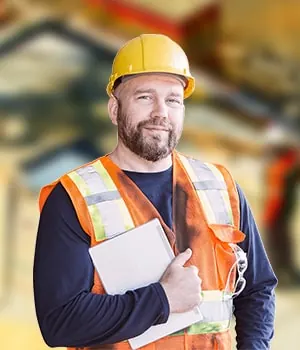
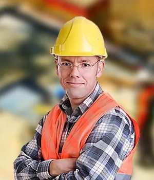
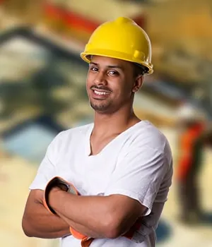
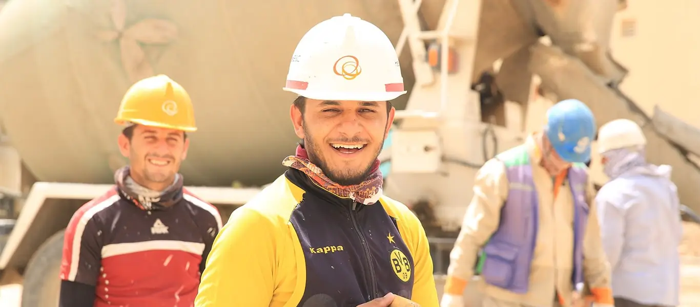

Tentang Kami
- Beranda
- Tentang Kami
Membangun dengan Keahlian, Kejujuran, dan Tanggung Jawab
PT Bangun Prima Konstruksi berdiri pada tahun 2001 dan bergerak di bidang jasa konstruksi umum, perencanaan, serta pengembangan infrastruktur. Selama lebih dari dua dekade, kami telah menyelesaikan ratusan proyek: dari rumah tinggal, ruko, dan perkantoran hingga apartemen, pabrik, dan jalan lingkungan.
Kekuatan kami terletak pada kombinasi tim teknis yang solid, sistem kerja yang terdokumentasi, serta kepemilikan peralatan sendiri sehingga jadwal dan biaya lebih terkendali. Kami tidak sekadar mendirikan bangunan, tetapi memastikan bangunan tersebut aman, laik fungsi, dan nyaman digunakan puluhan tahun ke depan.
Bagi kami, setiap proyek adalah kepercayaan. Karena itu kami membangun hubungan jangka panjang dengan klien melalui komunikasi yang terbuka dan layanan purna jual yang responsif.
- Layanan satu atap: desain, bangun, hingga pemeliharaan
- Armada alat berat dan peralatan beton milik sendiri
- Tim bersertifikat dan terlatih secara berkala
- Pelaporan proyek transparan dan terdokumentasi

Arah dan Komitmen Perusahaan
Visi
Menjadi perusahaan konstruksi pilihan utama di Indonesia yang dikenal karena mutu pekerjaan, integritas, dan inovasi, serta memberi nilai tambah nyata bagi klien, karyawan, dan masyarakat.
Misi
- Menyelesaikan setiap proyek dengan mutu terbaik, tepat waktu, dan sesuai anggaran
- Menerapkan keselamatan dan kesehatan kerja sebagai budaya, bukan sekadar kewajiban
- Mengembangkan kompetensi dan kesejahteraan seluruh tenaga kerja
- Mengadopsi teknologi dan metode konstruksi yang efisien dan ramah lingkungan
- Membangun kemitraan jangka panjang yang saling menguntungkan
Enam Nilai yang Kami Pegang Teguh
Nilai-nilai ini menjadi dasar setiap keputusan kami, di kantor maupun di lapangan.
Integritas
Jujur dalam harga, jadwal, dan laporan. Kami berani mengatakan yang sebenarnya kepada klien.
Kualitas
Tidak ada kompromi pada mutu material maupun hasil pekerjaan.
Keselamatan
Tidak ada pekerjaan yang lebih penting daripada keselamatan manusia.
Kerja Sama
Klien, konsultan, dan tim lapangan bekerja sebagai satu tim.
Ketepatan Waktu
Janji jadwal adalah janji yang harus ditepati.
Keberlanjutan
Membangun hari ini dengan memikirkan generasi berikutnya.
Lebih dari Dua Dekade Membangun Negeri
Tonggak penting dalam perjalanan perusahaan kami.
- 2001
Perusahaan Berdiri
Dimulai sebagai kontraktor rumah tinggal dengan 12 pekerja di Jakarta Selatan.
- 2005
Ekspansi ke Bangunan Komersial
Mengerjakan proyek ruko dan perkantoran pertama dengan nilai kontrak di atas Rp10 miliar.
- 2009
Sertifikasi ISO 9001
Menerapkan sistem manajemen mutu internasional di seluruh proses kerja.
- 2013
Divisi Desain & Arsitektur
Membentuk tim desain internal agar klien memperoleh layanan satu atap.
- 2017
Kepemilikan Alat Berat
Menambah armada ekskavator, crane, dan peralatan beton untuk pekerjaan infrastruktur.
- 2020
Sertifikasi SMK3
Mendapatkan penghargaan penerapan Sistem Manajemen K3 dengan tingkat pencapaian tinggi.
- 2023
Proyek Apartemen & Kawasan Industri
Menangani hunian vertikal 24 lantai dan pematangan kawasan industri 18 hektare.
- 2026
Lebih dari 780 Proyek Selesai
Tim 120 tenaga ahli melayani klien di lebih dari 15 kota di Pulau Jawa dan sekitarnya.
Kenali Para Ahli di Balik Setiap Proyek
Dipimpin profesional berpengalaman dengan latar belakang teknik sipil, arsitektur, dan manajemen konstruksi.

Ir. Hendra Wijaya, M.T.
Direktur UtamaLebih dari 28 tahun memimpin proyek gedung dan infrastruktur skala besar.
Dimas Prasetyo, S.T.
Manajer ProyekMengawal jadwal, biaya, dan koordinasi seluruh pihak di lapangan.

Rizky Ramadhan, S.T.
Ahli Struktur & EstimatorMerancang struktur efisien dan menyusun RAB yang akurat.

Agus Santoso
Kepala Pelaksana & K3Memastikan pekerjaan berjalan aman, rapi, dan sesuai gambar kerja.

Keselamatan Kerja adalah Prioritas Utama
Di BangunPrima, tidak ada target jadwal yang lebih penting daripada keselamatan pekerja dan lingkungan sekitar proyek. Setiap lokasi dipimpin petugas K3 bersertifikat yang memastikan prosedur dijalankan setiap hari.
- Induksi keselamatan wajib bagi seluruh pekerja dan tamu proyek
- Alat pelindung diri (APD) lengkap dan diperiksa setiap hari
- Inspeksi mingguan, analisis risiko (JSA), dan izin kerja berisiko
- Uji material di laboratorium: kuat tekan beton, tarik baja, dan kepadatan tanah
- Dokumentasi mutu lengkap sebagai bagian dari dokumen serah terima
Perusahaan Resmi dan Terverifikasi
Kami memenuhi persyaratan hukum dan standar industri konstruksi di Indonesia.
SBU Konstruksi
Sertifikat Badan Usaha kualifikasi menengah-besar untuk bidang bangunan gedung dan sipil.
ISO 9001:2015
Sistem manajemen mutu yang diaudit secara berkala oleh lembaga sertifikasi independen.
SMK3
Sistem Manajemen Keselamatan dan Kesehatan Kerja sesuai peraturan pemerintah.
SKK Konstruksi
Seluruh tenaga teknis kami memiliki Sertifikat Kompetensi Kerja sesuai jenjang.
NIB & Legalitas Lengkap
Akta pendirian, NPWP, NIB, dan keanggotaan asosiasi konstruksi yang aktif.
Komitmen Lingkungan
Pengelolaan limbah proyek, penghematan air, dan penggunaan material ramah lingkungan.
Seputar Perusahaan Kami
Sejak kapan BangunPrima beroperasi?
Perusahaan kami berdiri pada tahun 2001 dan telah menyelesaikan lebih dari 780 proyek di berbagai kota di Indonesia.
Apakah BangunPrima memiliki izin dan sertifikasi resmi?
Ya. Kami memiliki SBU Konstruksi, NIB, serta sertifikasi ISO 9001:2015 dan SMK3. Seluruh tenaga teknis kami juga memiliki SKK Konstruksi.
Jenis proyek apa saja yang Anda tangani?
Kami menangani rumah tinggal, ruko, perkantoran, gudang, pabrik, apartemen, fasilitas publik, hingga pekerjaan tanah dan infrastruktur pendukung.
Apakah kami dapat melihat hasil proyek sebelumnya?
Tentu. Kami dapat mengatur kunjungan ke proyek yang telah selesai maupun yang sedang berjalan, serta memberikan referensi klien atas permintaan.
Apakah Anda menerima proyek di luar Pulau Jawa?
Ya, untuk proyek dengan skala tertentu. Kami akan melakukan survei dan menyusun rencana logistik terlebih dahulu agar biaya dan jadwal tetap realistis.
Berapa jumlah tenaga kerja yang terlibat dalam satu proyek?
Bergantung pada skala proyek. Rumah tinggal biasanya melibatkan 8-15 pekerja, sedangkan gedung bertingkat bisa mencapai ratusan pekerja dengan struktur organisasi proyek lengkap.
Bagaimana cara menjadi mitra atau subkontraktor?
Kirimkan profil perusahaan dan portofolio Anda melalui email. Tim pengadaan akan menghubungi bila ada kebutuhan yang sesuai.
Apakah ada peluang karier di BangunPrima?
Kami selalu terbuka bagi insinyur, arsitek, pelaksana, dan tenaga K3 berpengalaman maupun lulusan baru. Kirimkan CV Anda ke alamat email kami.
Mari Bangun Bersama BangunPrima
Konsultasi dan survei lokasi awal tanpa biaya. Tim kami siap merespons dalam 1 x 24 jam kerja.